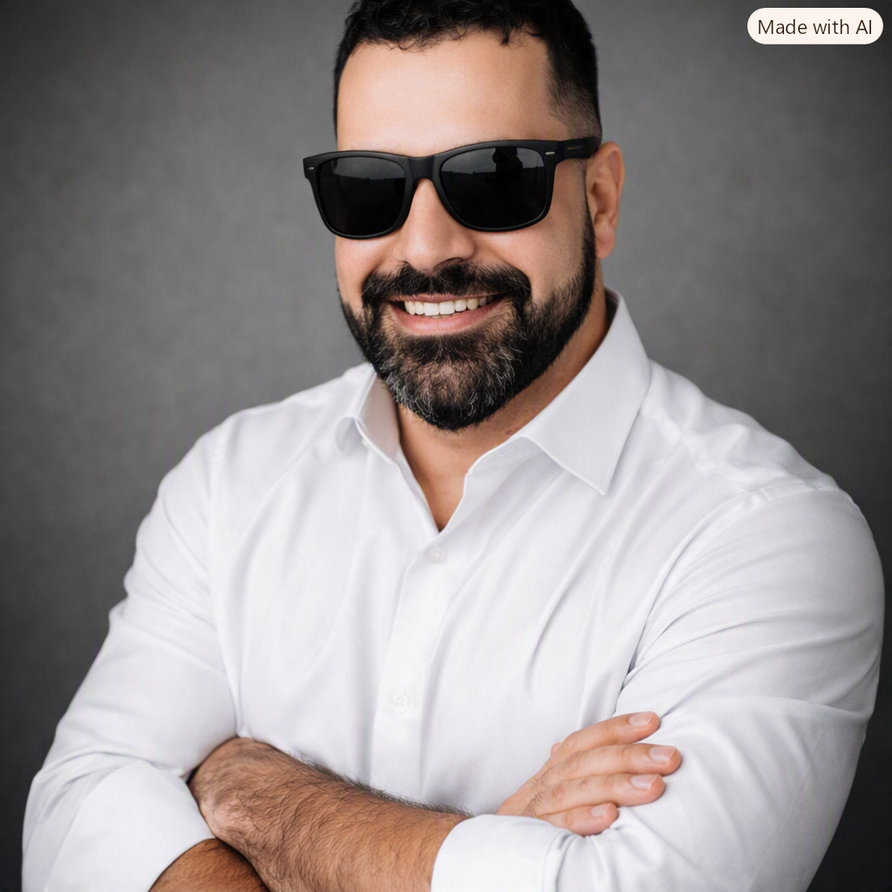

01
Portfólio pessoal
2026Jackson Andrade — Desenvolvedor Web
Uma apresentação direta da minha trajetória, habilidades e projetos, feita para aproximar pessoas e oportunidades.
Desenvolvedor em construção
Sou Jackson Andrade, desenvolvedor web em transição de carreira. Transformo problemas reais de operação em soluções digitais simples, úteis e feitas para durar.

Da manutenção à inovação
Sou Jackson, profissional com sólida experiência na área elétrica industrial e em constante evolução para o campo da tecnologia. Depois de anos atuando na manutenção e operação de sistemas elétricos, percebi que poderia ampliar meu impacto desenvolvendo soluções que otimizassem processos.
Uno experiência prática, curiosidade e tecnologia para criar ferramentas que simplificam rotinas, organizam informações e geram resultados concretos para empresas e pessoas.
Projetos selecionados
Portfólio pessoal
2026Uma apresentação direta da minha trajetória, habilidades e projetos, feita para aproximar pessoas e oportunidades.
Sistema de manutenção
Em evoluçãoControle de paradas para dar mais visibilidade ao planejamento e mais eficiência à operação da manutenção.
Operação em campo
Em evoluçãoVisibilidade em tempo real para gestores e equipes que acompanham equipamentos em oficinas móveis.
Gestão de pessoas
Em evoluçãoOrganização e rastreabilidade de treinamentos, acessíveis em qualquer dispositivo e lugar do mundo.
O próximo projeto pode começar aqui
Estou aberto a oportunidades, projetos freelance e boas conversas sobre tecnologia aplicada a problemas reais.
jacksonandradesilva33@gmail.com ↗